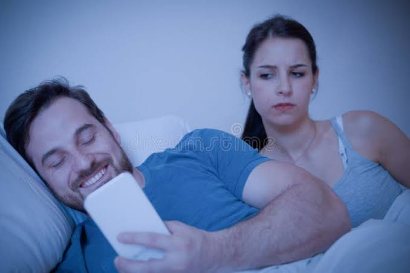
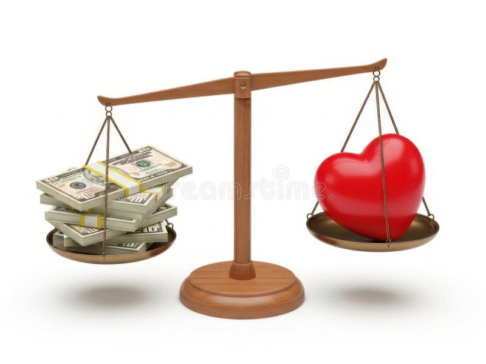

There seems to be an increasingly worrying trend of singlehood among youths and young adults in society today. This phenomenon is not limited to a single location but across the globe. Recently, the Financial Times reported that the nature of modern society is fundamentally shifting with the number of single people consistently increasing.
In the United States, a report by Forbes indicated that research conducted by Pew Research Center found that 57% of single Americans have no interest in engaging in any relationship! The situation is so serious that in Japan, the government has reduced the number of days per week that people spend at work in what is seen as a way of addressing its declining birth rates. Additionally, Japan has created an official dating app to act as a platform for single people to meet and hook up.
In addition to becoming less common, romantic relationships are also becoming fragile. As reported by the Financial Times, in egalitarian Finland, even in cases where couples decide to move in together, their relationship is more likely to end in separation than having a child. Noting that marriage is on decline globally, Dr. Steven Mintz, a professor of history at the University of Texas at Austin and the Executive Director of University of Texas System’s Institute for Transformational Learning, reveals that, “Among women in their late 30s or early 40s, 29% are unmarried in Denmark, 18% in Italy, 22% in Lebanon and 32% in Libya”.
So why this Phenomenon?
Technology and Social Media Influence
According to Financial Times the situation could be as a result of the proliferation of smartphones and social media. Youths and young adults, especially women, are increasingly relying on digital platforms including social media as their main avenues for socialization. Instead of face-to-face interactions, youths and young adults spend most of their time interacting through WhatsApp, Facebook, X, Email and other chatrooms. Text messaging has become a major route of communication and in most cases, it entails very short messages because people no longer care for longer texts. With the emergence of emojis and gifs, the physical facial or tonal expression of emotions is no longer an issue because a short text accompanied with an emoji or gif is believed to do the trick.
Even when individuals succeed in entering into romantic relationships, the same technology becomes the devil that ruins relationships. A couple finds itself struggling with real person-to-person communication or sustaining a conversation without staring at their smartphones or television. The lack of eye contact and emotional connection among partners creates a rift that slowly pushes them apart. For some partners, especially those with insecure attachments, time spent on social media and lack of attention is interpreted as disrespect, unfaithfulness or abandonment, further aggravating the situation. In worst case scenarios, some relationships turn violent and deadly while most end up in separation or break ups.

Additionally, social media has become a major influencing tool when it comes to romantic relationships. People constantly get exposed to highlight reels from other couples’ relationships and what they see casts doubt on their ability to maintain their own relationships or even enter into new ones. In some cases, other individuals start doubting whether they are satisfied in their current romantic relationships by creating a wrong perception of what a perfect relationship ought to be. For instance, individuals are bombarded with videos and images of couples who appear to be in perfectly flawless relationships, and showcasing their happiness and romantic prowess. This leads to a wrong impression about relationships as individuals start comparing their lives with what they see on social media and feelings of lack emerge which create problems in their romantic relationships. Consequently, some youths and young adults end up dismissing genuine partners in their quest for perfect romantic relationships.
Technological innovations such as Tinder and Bumble, apps that are used for dating, have made it easy for individuals to find their “matches” on their smartphones. Here, people have variety of possible “soulmates” they can choose from. Unfortunately, these apps emphasize quantity as opposed to quality. For most youths and young adults that rely on dating apps, casual dates have been normalized and long-term relationship commitments are considered a secondary concern. Additionally, the use of dating apps to find instant partners for short-term emotional fulfilment makes it difficult for youths and young adults to have the patience to nurture genuine relationships that can guarantee them long-term emotional support.
Financial Instability
According to Dr. Helen Fischer, an anthropologist and Chief Scientific Advisor at Match.com, financial instability is a major factor deterring youths and young adults from engaging in romantic relationships. Specifically, Fischer points out that one out of three single people want to put their finances in order before thinking about romantic relationships. Amidst soaring student debts and uncertainty in the job market, youths have prioritized achieving financial stability before venturing into romantic relationships. For those who are ready for romantic relationships, economic evaluation of potential partners has become a major lens of selecting a partner. Unfortunately, considering an individual’s economic status tends to ignore emotional compatibility, which is a very essential factor in a romantic relationship.
With the current inflation on the rise, dating has become a nightmare for most youths and young adults. While most of them may want to make efforts, the uncertainty of spending on a date while other bills are lined up for them becomes a challenge that they find difficult to surmount. In some cases, youths who are dating may find it difficult to sustain their relationships due to the financial obligations they may have back at their homes, especially if they are the main source of income. Weighing between their parents and siblings who need them, and the idea of romantic relationship that adds to the burden becomes overwhelming thus, forcing them to quit and focus on the situation back in their homes.

There is also the idea of bride price or dowry in some cultures. The requirement to settle bride price or dowry before marriage becomes a stumbling block for most youths and young adults. Whereas some may opt to cohabit, those who cannot end up separating. Even in cohabitation, the need for a partner’s financial support becomes a source of strain in the relationship and those who cannot cope opt for an end to the relationship.
Work and Career Development
For most youths and young adults, being employed is a major achievement and they are willing to do everything within their power, including advancing their careers, to maintain their employment status and climb the leadership ladder. While employment and career growth is commendable, the way it is handled can have a significant impact on romantic relationships. For instance, research indicates that individuals who prioritize and spend more hours at their workplace or handling their work at the expense of their partners cannot sustain their relationships. Generally, excessive focus on work makes a person neglect their personal relationship by creating distance with their partner. When this happens, the partner ends up feeling overlooked and undervalued and the resulting rift becomes difficult to mend.

In a quest to achieve professional success, individuals may focus more on networking events, and meeting deadlines. This usually takes precedence over romantic dates and sharing intimate moments with partners. Placing financial security, recognition and professional success central to one’s engagements pushes romantic relationship to the periphery and even as partners struggle to find synchrony in their schedules, gaps in communication may emerge thus, causing misunderstanding that may lead to the ending of relationships. In some cases, individuals who belief that the relationship will impede their professional growth may take a break from relationships.
A shift in the Cultural Landscape
The feminist movement has also redefined the romantic landscape in society. Unlike traditional societies where women were required to stay in their husbands’ homes and allow their husbands to provide for them, today women have been intellectually empowered. They cannot only be employed, but they can also vote and challenge for political offices. These changes have had significant impacts on romantic relationships. The establishment of policies that allow for divorce and family planning have also liberated women allowing them to make decisions regarding their personal lives. The normalization of divorces has led to the dissolution of several marriages and a significant reduction in the number of individuals who are getting married.
Instead of making long-term relationship commitments, youths and young adults have embraced casual sexual relationships and experiences which they consider a normal component of emerging adulthood. As studies have indicated, today, people prefer pure relationships where “one has the liberty to stay in a relationship that fulfils their emotional and sexual needs without the restrictions of traditional expectations such as marriage”. This means that if one feels unfulfilled, they are at liberty to end the relationship. Furthermore, Dr. Alexandra Solomon, a psychologist at Northwestern University, reveals that youths and young adults have grown up at a period when awareness has been created about emotional health, consent and individual identity. Consequently, they are more inclined to spend most of their time and energy in efforts that promote their personal growth, mental health and friendship before committing to romantic relationships.
In an age where divorce is a common phenomenon, and extra-marital escapades abound, a new social trend has also been implicated in the current situation where single people have shown slowness when it comes to engaging in romantic relationships. According to Fischer, “Some 70% cautiously begin a partnership as “just friends.” Then they slowly become friends-with-Benefits to see if they are compatible between the sheets—another important part of most relationships.” Approximately 90% youths and young adults who are single are looking for partners that are loyal, respectful, trustworthy and who can make them laugh. When these conditions are not met, that marks the end of a relationship.